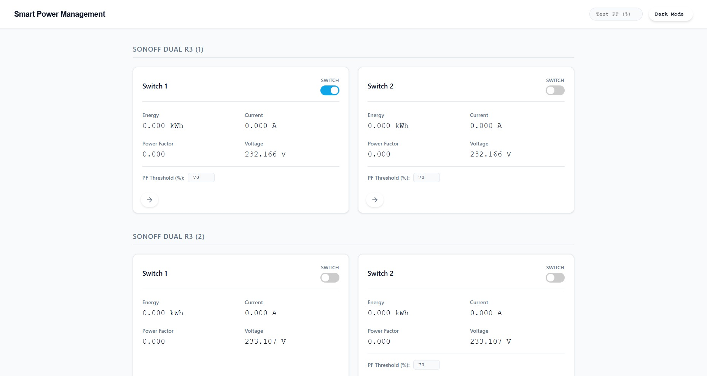
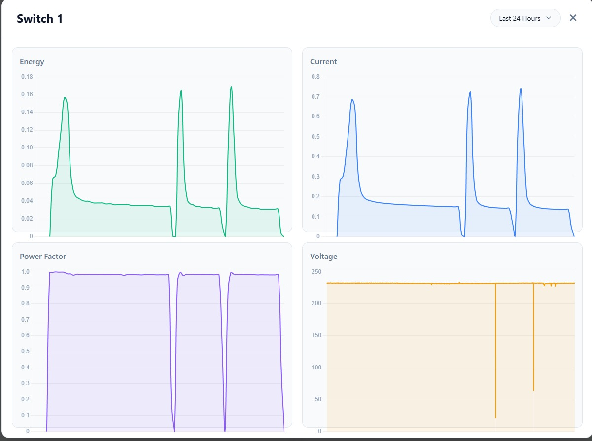

I built a local-network web application for real-time monitoring and automated correction of power factor across industrial and commercial electrical installations — improving efficiency and cutting utility penalties. A textbook ICS target — and I now know its attack surface from the inside. See the security perspective ↓
To deliver a local-network web application for real-time monitoring and automated correction of power factor across industrial and commercial electrical installations — improving energy efficiency and reducing utility penalties, entirely without cloud dependency.
Centralized, cloud-free monitoring. Gave facility managers a web dashboard to monitor power factor readings from connected energy meters in real time — with no cloud dependency.
Automated capacitor switching. When the power factor of any monitored device drops below the threshold, the system automatically activates the appropriate capacitor bank to compensate.
Zero manual intervention. Eliminated manual power factor management — reducing energy wastage and avoiding reactive-power surcharges from utilities.
Fully local deployment. Runs entirely on a local server within the facility network — ensuring data privacy, low latency and reliable operation independent of internet connectivity.
Continuous metering & logging. Integrated energy meter interfaces to continuously read and log power factor, current and voltage metrics for auditing and historical analysis.
Deployed as a controllable web dashboard with an integrated power consumption view — giving facilities live power-factor gauges, automated capacitor-bank actuation and a complete historical audit trail.


This is the clearest bridge from what I built to what I now secure — a textbook industrial control target.
Attack surface. Modbus RTU has no authentication — a single rogue write can switch capacitor banks, i.e. real physical actuation on the electrical system. The controller's serial/RS-485 side and exposed services add to it.
Secure by design. LAN-only deployment with no internet dependency already removes the largest class of remote threats.
How I'd harden it. Enforce that only the controller may issue Modbus writes, monitor for unauthorized function codes, segment the RS-485/serial side, and harden the Raspberry Pi — aligned to IEC 62443 zones & conduits.